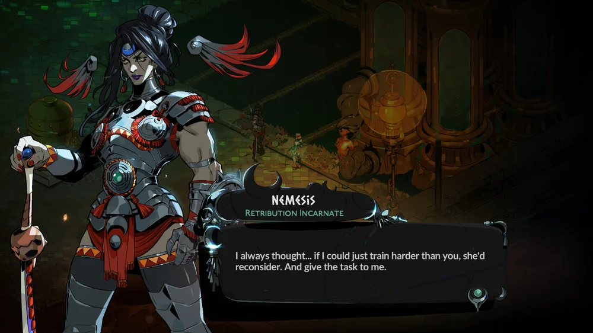
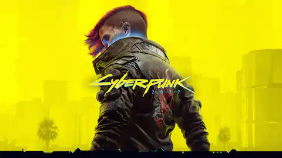

PC
Acceso anticipado de 'Hades II'
La secuela del aclamado Hades está a punto de llegar, y los fans de los roguelikes no podrían estar más emocionados. Hades II, desarrollado por Supergiant Games, estará disponible en acceso anticipado en abril de 2025 en Steam y Epic Games Store. Este nuevo capítulo introduce a Melinoë, la hermana de Zagreus, como protagonista, mientras explora mitos griegos más oscuros y menos conocidos. Con nuevas armas, habilidades y un enfoque más profundo en la narrativa, Hades II promete mantener el mismo nivel de excelencia que su predecesor, añadiendo aún más capas de complejidad estratégica y emocional. Este acceso anticipado permitirá a los jugadores dar feedback al estudio para ajustar y pulir la experiencia final.
Nueva expansión de Cyberpunk 2077
CD Projekt Red ha anunciado una nueva expansión gratuita para 'Cyberpunk 2077', programada para 2025. Esta actualización incluirá nuevas historias, personalización de vehículos y mejoras en la experiencia general del juego.